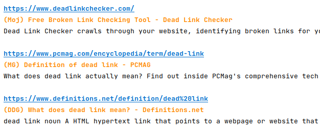

Aggregates results from several search engines with output to Terminal and text file. This is a fork of Search Engines Scraper by tasos_py, but is run from the aggregate_search.py Python script.
Python 3 with Requests and BeautifulSoup
Developed in Python 3.8-3.9
Download the .zip code archive, extract the .zip file, open Terminal/Command Prompt in the search-aggregator-main folder, run the setup file:
$ python3 setup.py install
Done!
aggregate_search.py from Terminal/Command Prompt:
python3 aggregate_search.py or ./aggregate_search.py
python3 aggregate_search.py or python aggregate_search.py or py aggregate_search.py, depending on your system environment.
Enter search term: gov forest policies
User agents assigned for this search:
MegaGer: Firefox/74.0
DuckDuckGo:aggregate_search/0.4 Repo: https://github.com/csecht/search-aggregator
Startpage: Firefox/82.0
Mojeek: b'Opera/8.10 (Windows NT 5.1; U; en)'
Searching Metager
Keeping the first 30 results from MetaGer (MG)
Searching Duckduckgo
Keeping the first 20 results from DuckDuckGo (DDG)
Searching Startpage
Keeping the first 20 results from Startpage (SP)
Searching Mojeek
Keeping the first 20 results from Mojeek (Moj)
Kept 90 total results.
There are 74 unique results.
24 unique results retained from (MG)
14 unique results retained from (DDG)
16 unique results retained from (SP)
20 unique results retained from (Moj)
https://www.fs.usda.gov/about-agency/regulations-policies
(SP) Regulations & Policies | US Forest Service
Federal agencies operate under the U.S. Code and the Code of Federal Regulations. These laws help form our directives and policies on how we manage national ...
https://www.fs.usda.gov/science-technology/forest-products-modernization/policy-updates
(MG) Policy Updates | US Forest Service - USDA
Timber sales production in the Chattahoochee National Forest, GA. (Forest Service photo by Cecilio Ricardo). The USDA Forest Service recently issued…
https://portal.ct.gov/DEEP/Forestry/Forest-Policy-and-Planning
(Moj) CT Forest Policy and Planning
Some of the features on CT.gov will not function properly with out javascript enabled. ... Get the latest updates on COVID-19 at ct.gov/coronavirus .
https://kingcounty.gov/services/environment/water-and-land/forestry/forest-policy.aspx
(DDG) Forest policy and planning - King County
The Forestry Program is guided by the King County Comprehensive Plan, which establishes policies on the management of rural land and the uses that are suitable to the rural area. The Comprehensive Plan directs that strategies be developed to maintain forest cover and support the practice of sustainable forestry.
...and the remaining results. All results would be printed to Terminal and written to a file automatically titled: Results_gov+forest+policies.txt
Example of color-enhanced Terminal output: 
ARGUMENTS: --help, --info, --use, or --x.
aggregate_search.py --use provides examples of search term syntax, then exits.aggregate_search.py --x 2 doubles the number of results returned; --x 3 triples results, etc., up to --x 5. Without an --x argument, ~60 -- 80 total unique results are returned.The original command line client from Search-Engines-Scraper, search_engines_cli.py can be used for customized searches. For example,
python3 search_engines_cli.py -q forestry -p 4 -e mojeek
will return four pages of url results for the query 'forestry' from the Mojeek engine. To see additional search and output options, use the help command,
python3 search_engines_cli.py -h